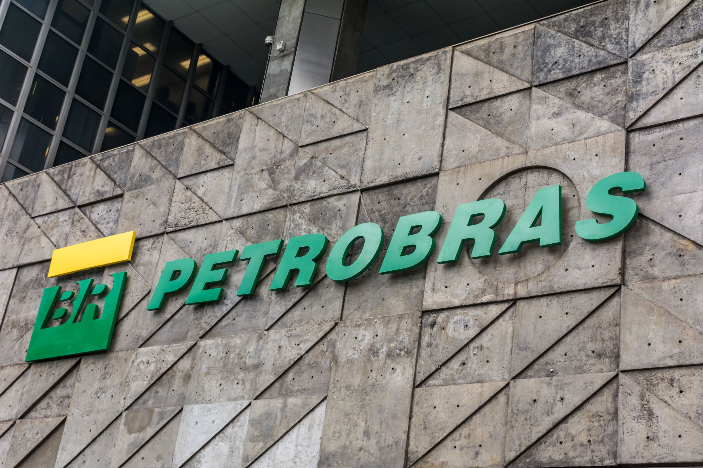

⚠️ATENÇÃO⚠️
Compromisso e Cuidado com os nossos Leitores
Nós da Papel News, temos uma missão que vai além de informar. Nós preocupamos genuinamente com o bem-estar de nossos leitores e buscamos oferecer não apenas notícias, mas também apoio e conscientização. Entendemos que cada pessoa que nos lê é parte de nossa grande família editorial.
Setembro é um mês emblemático para nós, marcado pela campanha de prevenção ao suicídio. É um período para reforçar a importância da saúde mental e do diálogo aberto sobre ansiedade e depressão. Sabemos que esses são desafios reais enfrentados por muitos e queremos estar ao seu lado, oferecendo palavras que confortam e informam.
Recomendamos que, ao sentir qualquer sintoma de ansiedade ou depressão, não hesite em buscar ajuda. Falar com alguém de confiança, seja um amigo ou familiar, pode ser o primeiro passo para encontrar suporte. Além disso, profissionais da saúde, como psicólogos, estão preparados para oferecer a assistência necessária.
Sua vida é preciosa! Queremos contribuir para que você encontre motivos para sorrir todos os dias. Por isso, nos dedicamos a criar conteúdos que informam, educam e inspiram. Estamos juntos nessa jornada, valorizando cada história e cada leitor.
Sua vida é valiosa e queremos vê-lo sorrir! 😁
Estamos aqui não apenas para trazer informações, mas para lembrar que você não está sozinho. 🙃
Bolsa de valores📈
Petrobras Conquista 1 Milhão de Acionistas: Um Marco na Democratização do Mercado de Ações Brasileiro
A Petrobras, uma das maiores empresas estatais do Brasil e líder no setor de energia, alcançou um feito histórico que reflete não apenas o sucesso da companhia, mas também a crescente democratização do mercado de ações brasileiro. A empresa anunciou recentemente que atingiu a marca de 1 milhão de acionistas individuais na bolsa de valores, um salto significativo de 170% nos últimos cinco anos.
Este marco é um indicativo da confiança que os investidores depositam na Petrobras, apesar das flutuações do mercado e dos desafios enfrentados pelo setor de petróleo e gás. A notícia vem em um momento em que a empresa reporta um retorno ao acionista de 11,4% em 2024, superando o índice Ibovespa, que teve uma valorização de cerca de 0,6% no mesmo período.
A ascensão no número de acionistas individuais também sugere uma mudança no perfil dos investidores no Brasil. Tradicionalmente dominado por investidores institucionais, o mercado de ações está se tornando mais acessível para o público em geral, o que pode ser atribuído a uma combinação de fatores, incluindo a educação financeira e o uso de tecnologias que facilitam o acesso ao investimento em ações.
A Petrobras destaca que o aumento do número de acionistas é resultado de uma série de boas notícias e do reconhecimento do potencial da companhia e da geração de valor de seus projetos e resultados. Além disso, a empresa enfatiza que o número de investidores pessoa física é agora maior que o de investidores institucionais, embora o volume detido em ações ainda seja desproporcionalmente maior no caso dos últimos.
O desempenho das ações da Petrobras tem sido objeto de atenção, com uma queda de 5,6% em 30 dias, mas um aumento de 6,3% em um período de 12 meses. Olhando para um horizonte de tempo mais amplo, de cinco anos, as ações da companhia apresentaram uma valorização de 34%.
Este crescimento no número de acionistas individuais não apenas beneficia a Petrobras, mas também é um sinal positivo para o mercado de capitais do Brasil como um todo. Indica uma maior participação e engajamento dos brasileiros no mercado financeiro, o que pode levar a uma economia mais robusta e diversificada.
A Petrobras, com sua vasta experiência e presença significativa no mercado, continua a ser uma escolha popular entre os investidores. Com 12 de 16 grandes bancos recomendando a compra das ações da companhia, a Petrobras mantém sua posição como uma empresa atrativa para investidores que buscam tanto a segurança de uma grande estatal quanto a promessa de retornos consistentes.
Este evento é um testemunho do potencial do mercado de ações brasileiro e da confiança que os investidores têm na Petrobras. À medida que mais brasileiros se tornam acionistas, a empresa e o país avançam juntos em direção a um futuro financeiro mais inclusivo e próspero.
Economia💰
A Decisão do Copom entre a Estabilidade Econômica e o Ajuste da Taxa Selic
O Comitê de Política Monetária (Copom) do Banco Central do Brasil está diante de uma decisão crucial nesta quarta-feira: manter ou elevar a taxa básica de juros, a Selic. Esta decisão vem em um momento de tensões econômicas marcadas pela recente alta do dólar e o impacto da seca sobre o preço de energia e alimentos, trazendo indefinição ao mercado financeiro.
A última alteração na taxa Selic ocorreu em agosto de 2022, quando houve um aumento de 13,25% para 13,75% ao ano. Desde então, a taxa experimentou uma série de cortes que totalizaram uma redução de 3,25 pontos percentuais, estabilizando-se em 10,5% ao ano desde julho de 2024. A expectativa, segundo a edição mais recente do boletim Focus, é de um possível aumento de 0,25 ponto percentual, o que elevaria a taxa para 10,75% ao ano.
A inflação, que é um dos principais indicadores observados pelo Copom, apresentou uma leve deflação de 0,02% em agosto, a primeira desde junho de 2023. No entanto, essa queda é percebida como temporária, dada a previsão de aumento nos preços de energia a partir de setembro devido à bandeira tarifária vermelha. Além disso, a seca prolongada já tem afetado o preço dos alimentos, com o ministro da Fazenda, Fernando Haddad, admitindo o impacto significativo dessa condição climática.
A taxa Selic é um instrumento vital para o controle da inflação, e sua definição impacta diretamente todas as taxas da economia brasileira. O Banco Central atua diariamente para assegurar que a taxa de juros se mantenha alinhada aos objetivos de política monetária. Com a inflação acumulada em 4,24% nos últimos 12 meses, o Copom enfrenta o desafio de equilibrar a necessidade de controle inflacionário com a promoção de crescimento econômico.
A decisão do Copom não apenas reflete a situação econômica atual, mas também sinaliza a direção da política monetária no futuro próximo. Com o mercado atento às suas movimentações, o Banco Central tem a responsabilidade de comunicar suas ações de forma clara, mantendo a confiança dos investidores e a estabilidade do mercado financeiro.
A reunião do Copom é, portanto, um evento de grande expectativa para economistas, investidores e para a população em geral, que aguarda os reflexos dessa decisão em seu cotidiano. A taxa Selic influencia desde o custo do crédito até os rendimentos de investimentos, afetando diretamente a vida financeira dos brasileiros.
Aguarda-se, com grande expectativa, o anúncio do Copom ao final do dia, que definirá o curso da economia brasileira nos próximos meses.
Tecnologia👨💻
Inovação e Prevenção! Google Investe em Satélites com IA para Combate a Incêndios Florestais

A gigante da tecnologia Google está financiando um projeto ambicioso que promete revolucionar a detecção e o combate a incêndios florestais em escala global. A iniciativa, conhecida como Earth Fire Alliance, visa monitorar o planeta através de uma constelação de satélites equipados com inteligência artificial (IA), capazes de identificar focos de incêndio com precisão e rapidez.
O projeto FireSat, como foi batizado, consiste em uma rede de 52 satélites que irão fornecer imagens atualizadas a cada 20 minutos, permitindo uma resposta mais ágil e eficaz no combate aos incêndios. Esta tecnologia representa um avanço significativo em relação aos sistemas atuais, que ou oferecem imagens de alta resolução com baixa frequência de atualização ou imagens atualizadas rapidamente, mas com resolução inferior.
A IA desenvolvida pelo Google desempenhará um papel crucial na análise dos dados capturados pelos satélites. Esta IA será capaz de diferenciar entre incêndios reais e outros elementos que possam ser confundidos com focos de fogo, como reflexos ou fumaça. A precisão desta tecnologia é tal que pode detectar incêndios com dimensões mínimas de 5 por 5 metros - aproximadamente o tamanho de uma sala de aula.
Além do aspecto tecnológico, o projeto FireSat também se destaca pela sua colaboração com diversas organizações, incluindo a Moore Foundation e a Environmental Defense Fund. O primeiro satélite está programado para ser lançado no início do próximo ano, com o objetivo de testar os sistemas e a qualidade dos dados gerados. A expectativa é que a constelação completa de satélites esteja operacional até o final desta década.
O investimento do Google neste projeto não é apenas um marco para a empresa, mas também um passo significativo para a proteção ambiental. Com a capacidade de detectar incêndios precocemente, o FireSat tem o potencial de salvar vidas, preservar a biodiversidade e minimizar os danos econômicos causados pelos incêndios florestais. A tecnologia desenvolvida poderá ser um recurso valioso para agências de combate a incêndios em todo o mundo, fornecendo dados cruciais para uma intervenção rápida e direcionada.
Este projeto é um exemplo de como a inovação tecnológica pode ser aplicada para resolver problemas globais e melhorar a qualidade de vida no planeta. Com a implementação do FireSat, o Google reafirma seu compromisso com a sustentabilidade e a gestão responsável dos recursos naturais, demonstrando que a tecnologia e a ecologia podem andar de mãos dadas na busca por um futuro mais seguro e verde.
Política🗳
STF Estabelece Novos Parâmetros para Acordo de Não-Persecução Penal
O Supremo Tribunal Federal (STF) proferiu uma decisão significativa que altera a aplicação do acordo de não-persecução penal (ANPP), um mecanismo legal que permite evitar a prisão de acusados em determinadas circunstâncias. A corte decidiu que o ANPP, introduzido pelo pacote anticrime de 2019, pode ser aplicado retroativamente a casos que já estavam em andamento antes da lei entrar em vigor.
A decisão do STF representa um marco importante na justiça penal brasileira, pois estabelece que réus podem se beneficiar do ANPP mesmo que não tenham confessado o crime antes da vigência da nova lei. Isso significa que, desde que o processo não tenha transitado em julgado, a defesa pode solicitar o acordo.
O ANPP é aplicável em situações onde o crime cometido não envolve violência ou grave ameaça e tem pena mínima inferior a quatro anos. Ao aceitar o acordo, o acusado deve confessar o delito e comprometer-se a reparar o dano, podendo ser submetido a medidas alternativas como prestação de serviços à comunidade ou pagamento de multa.
Esta decisão do STF tem o potencial de impactar cerca de 1,7 milhão de processos em todo o país, segundo dados do Conselho Nacional de Justiça. A expectativa é que, se 30% desses casos resultarem em acordos, haverá uma redução significativa no número de processos, aliviando o sistema judiciário brasileiro.
Os ministros do STF aprovaram uma tese que define as orientações para a aplicação do ANPP, que deverá ser usada por juízes, procuradores e advogados em processos penais nas instâncias inferiores. Entre as diretrizes, está a atribuição do Ministério Público de analisar a possibilidade do acordo e a permissão para que o ANPP seja discutido em processos ainda em andamento, caso não tenha sido oferecido anteriormente.
A decisão também estabelece que, para processos que começarem após a proclamação do resultado do julgamento, a proposta de acordo pelo Ministério Público ou as razões para negar o pedido devem ser apresentadas antes do recebimento da denúncia. Isso abre espaço para que o ANPP seja sugerido no curso da ação penal.
A medida é vista como um avanço na busca por uma justiça mais eficiente e menos onerosa, proporcionando uma alternativa à prisão que beneficia tanto o acusado quanto a sociedade, ao promover a reparação do dano e evitar a superlotação carcerária.
A decisão do STF é um reflexo da evolução do direito penal e da necessidade de adaptação do sistema judiciário às realidades contemporâneas, buscando soluções que conciliem a responsabilização do indivíduo com a eficácia e a humanização da justiça.